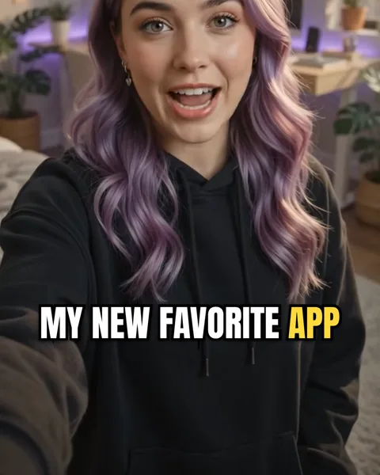
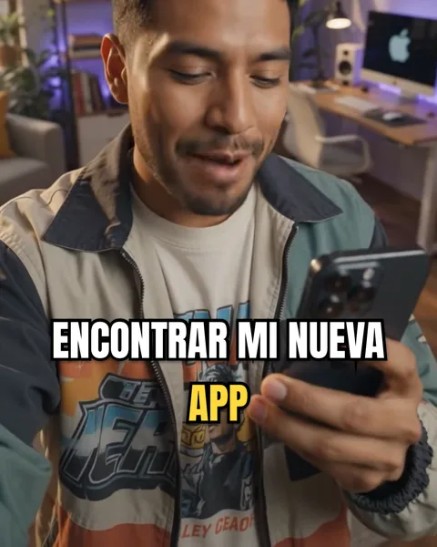

Hormozi-style captions on iPhoneSubtítulos estilo Hormozi en iPhone
People search this after a clip where every line hit like a headline. It is not a filter: it is five decisions, and once you can name them you can make any video read that way.La gente busca esto después de ver un clip donde cada línea pegaba como un titular. No es un filtro: son cinco decisiones, y cuando podés nombrarlas, cualquier video se lee así.


What the look is made ofDe qué está hecho el look
- Tall, heavy capitals — Anton or something like it — with a thick black outline.Mayúsculas altas y pesadas — Anton o algo parecido — con contorno negro grueso.
- One to three words on screen at a time.De una a tres palabras en pantalla a la vez.
- One word per line in colour, usually yellow or green: the word that carries the point.Una palabra por línea en color, casi siempre amarilla o verde: la que lleva la idea.
- Each word arriving as it is said — rising or popping in, not the whole line at once.Cada palabra apareciendo cuando se dice — subiendo o saltando, no la línea entera de golpe.
- Centred, a little below the middle, clear of the app's buttons.Centrado, un poco abajo del medio, lejos de los botones de la app.
Why the coloured word matters mostPor qué importa tanto la palabra en color
Someone scrolling with the sound off reads one word per line, not three. Colouring the right one — the number, the noun, the verb that does the work — means the skim still gets the message. Colour the wrong one, or a different one every line, and it turns into noise.Alguien que pasa videos sin sonido lee una palabra por línea, no tres. Pintar la correcta — el número, el sustantivo, el verbo que hace el trabajo — hace que la lectura rápida igual entienda. Pintar la equivocada, o una distinta en cada línea, lo vuelve ruido.
How to do it in CharlatanCómo hacerlo en Charlatan
- Open your clip and choose the Punch pace — bursts of two to three words.Abrí tu clip y elegí el ritmo Punch — golpes de dos a tres palabras.
- Open the Styles tab and tap Hustle. Font, outline, the yellow keyword and the rising words are set at once.Abrí la pestaña Diseños y tocá Hustle. Tipografía, contorno, la palabra clave en amarillo y las palabras que suben quedan puestas de una vez.
- The keyword is picked for you in each line. To change it, go to Text, tap the pencil on a subtitle and tap the word you want.La palabra clave se elige sola en cada línea. Para cambiarla, andá a Texto, tocá el lápiz de un subtítulo y tocá la palabra que quieras.
- Drag the caption into place — the guide shows where TikTok, Reels and Shorts buttons will cover it — and export at 9:16.Arrastrá el subtítulo a su lugar — la guía muestra dónde lo tapan los botones de TikTok, Reels y Shorts — y exportá en 9:16.
Questions people also askLo que también preguntan
What font are Hormozi captions?
A tall, condensed, heavy sans in capitals. Anton is the free font closest to it; Impact and Bebas Neue are near relatives. The font matters less than the capitals, the outline and the single coloured keyword.
Is the Hustle style made by or affiliated with Alex Hormozi?
No. Hustle is Charlatan's own style, built from the elements that look is known for. The name is only used here to describe the look people search for.
Charlatan is not affiliated with any creator or platform named on this page.Charlatan no tiene relación con ningún creador ni plataforma nombrados en esta página.